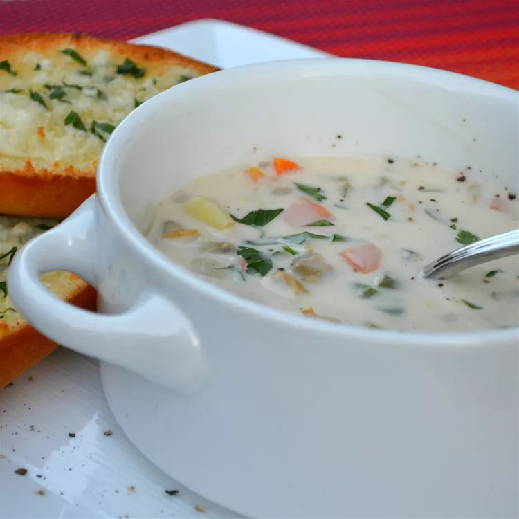

Clam Chowder

Did you know you can make restaurant-worthy clam chowder at home? Well, you can! This top-rated clam chowder recipe creates rich, smooth, creamy, and wonderfully flavorful results every time.
Ingredients
- Vegetables: You'll need potatoes, carrots, celery, and onion.
- Clams: Use canned minced clams. Don't forget to reserve the juice!
- Butter and flour: Make a roux with melted butter and all-purpose flour.
- Cream: A quart of half-and-half cream creates a thick, smooth, velvety texture.
- Red wine vinegar: Two tablespoons of red wine vinegar add welcome acidity.
- Seasonings: This clam chowder is simply seasoned with salt and pepper.
Steps
- Cook the vegetables in clam juice until tender.
- Make the roux, then whisk in the half-and-half.
- Stir in the vegetable mixture.
- Add the clams.
- When they're heated through, stir in the vinegar and seasonings.
- Optional: If you'd like your chowder a little thicker, you can thicken it with a cornstarch slurry.